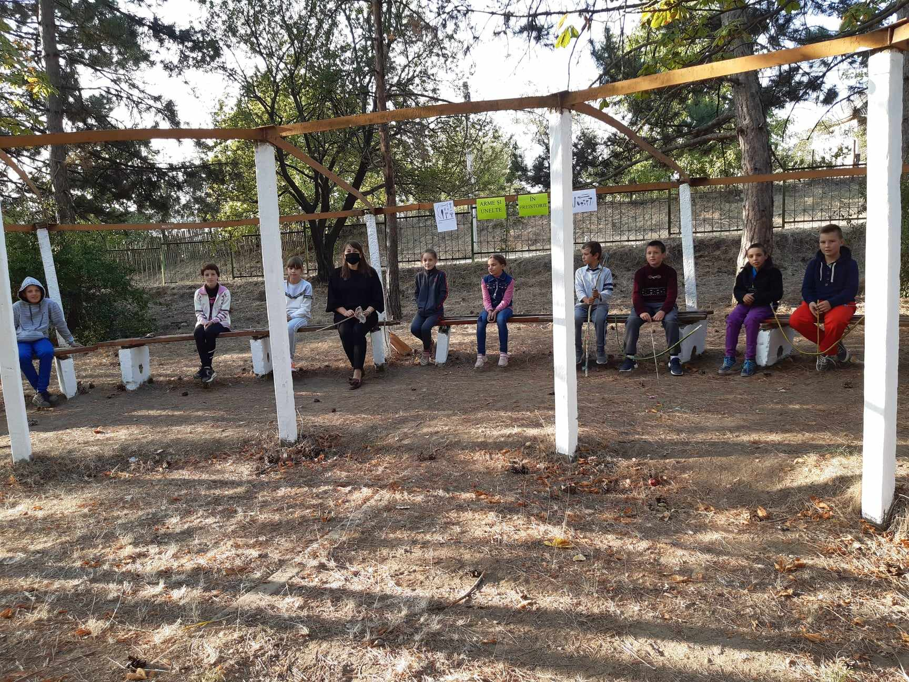

Activități:
Civilizația romană, clasa a V-a


Tipul activității: proiect steam
Scopul: valorificarea conținuturilor la unitatea ”Roma antică”
Obiectivele operaționale:
O1: Să identifice principalele realizări în cadrul civilizației romane;
O2: Să descrie arta romană, folosind sursele propuse;
O3: Să realizeze un monument arhitectural ce datează din antichitatea romană;
Să estimeze contribuția civilizației romane pentru umanitate, formulând un minidiscurs.
Strategii: modelul celor 5 D
Mijloace: calculator, proiector, carioce, foi colorate, fișe de lucru, foi A3 etc.
Desfășurarea activității: clasa este divizată pe următoarele centre: știință, tehnologii, artă, matematică și realizează sarcinile propuse.
Pe urmele oamenilor preistorici, clasa a V-a

Tipul activității: proiect transdiciplinar
Elevii au fost realizat arme și unelte specifice preistoriei. Au selectat materialele specifice și au reprodus: toporașe, lamele, arcuri și sageți preistorice.
Festivalul medieval, clasa a VI-a
Concursul blazoanelor și alte produse realizate de către elevi
Domeniul feudal confecționat de elevi:


Aprecierea:
Tu ești tabloul, clasa a 7-a, a 8-a
Această asctivtate transciplinară a avut ca scop reproducerea unor lucrări plastice prin intermediu fotografiei, așa cum o vede elevul. A fost organizat sub formă de concurs, la care au participat elevi din gimnaziul Săseni și școala gimnazială comuna Romanu, județul Brăila, România. Împreună cu Georgiana Ioan, profesoară de istoria din România am organizat acest concurs interesat. La final toate prdusele au fost plasate pe wakelet și s-a votat cele mai reușite reproduceri. Câștigătorii au fost premiați într-o ședințe pe zoom.
Activitate transdisciplinară: ”Orfanii războiului”, clasa a IX-a
Clasa a IX-a : ”Orfanii războiului” este oactivitate transdiciplinară desfășurată la lecția de sinteză pentru unitatea de învățare ”Al Doilea Război Mondial”. Este o activitate care are ca scop aprecierea consecințelor celui de al Doilea Război Mondial.
Proiect după modelulul ”Clasa Inversată”
Clasa a VII-a
Subiectul: Importanța răscoalei lui Tudor Vladimirescu
Discipline: limba română, informatica, geografie, matemetică
Mai multe resurse și materiale
Proiect didactic integrat
Clasa a VII-a
Subiectul: Importanța declarației drepturilor omului și cetățeanului
Discipline înrudite: Educație pentru Socializare Juridică, Matematica, Geografia, Limba și literatura Română, Educția pentru Societate, limba franceză.